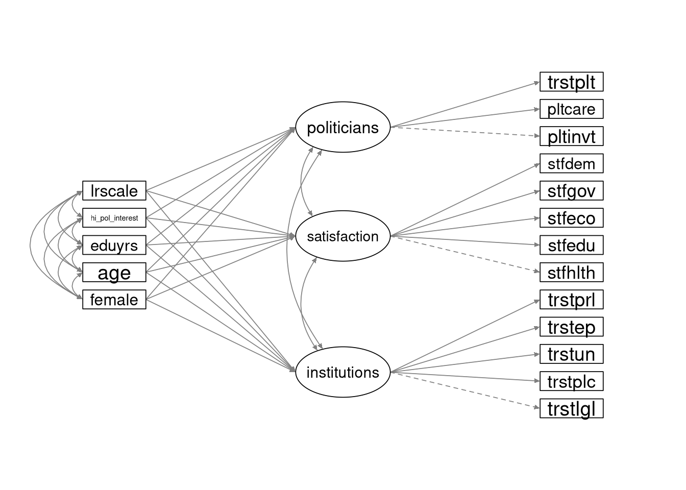

6.3 At-Home Exercises
This week, we’ll take another look at the Kestilä (2006) results. During this practical, you will conduct an SEM to replicate the regression analysis of the Finnish data that you conducted in the Week 4 In-Class Exercises.
6.3.1
Load the Finnish subsample of ESS data.
- The relevant data are contained in the ess_finland.rds file.
- These are the processed Finnish subsample data from the Week 4 exercises.
Note: Unless otherwise noted, all the following analyses use these data.
Click to show code
ess_fin <- readRDS("ess_finland.rds")We need to do a little data processing before we can fit the regression model.
At the moment, lavaan will not automatically convert a factor variable into
dummy codes. So, we need to create explicit dummy codes for the two factors
we’ll use as predictors in our regression analysis: sex and political
orientation.
6.3.2
Convert the sex and political interest factors into dummy codes.
Click to show code
library(dplyr)
## Create a dummy codes by broadcasting a logical test on the factor levels:
ess_fin <- mutate(ess_fin,
female = ifelse(sex == "Female", 1, 0),
hi_pol_interest = ifelse(polintr_bin == "High Interest", 1, 0)
)
## Check the results:
with(ess_fin, table(dummy = female, factor = sex))## factor
## dummy Male Female
## 0 960 0
## 1 0 1040with(ess_fin, table(dummy = hi_pol_interest, factor = polintr_bin))## factor
## dummy Low Interest High Interest
## 0 1070 0
## 1 0 929Click for explanation
In R, we have several ways of converting a factor into an appropriate set of dummy codes.
- We could use the
dplyr::recode()function as we did last week. - We can use the
model.matrix()function to define a design matrix based on the inherent contrast attribute of the factor.- Missing data will cause problems here.
- We can us
as.numeric()to revert the factor to its underlying numeric representation {Male = 1, Female = 2} and use arithmetic to convert {1, 2} \(\rightarrow\) {0, 1}.
When our factor only has two levels, though, the ifelse() function is the
simplest way.
We are now ready to estimate our latent regression model. Specifically, we want
to combine the three OLS regression models that you ran in 4.4.16
into a single SEM that we will estimate in lavaan.
The following path diagram shows the intended theoretical model.

Although the variances are not included in this path diagram, all variables in the model (including the observed predictor variables) are random.
6.3.3
Define the lavaan model syntax for the SEM shown above.
- Use the definition of the
institutions,satsifaction, andpoliticiansfactors from 5.3.2 to define the DVs. - Covary the three latent factors.
- Covary the five predictors.
Click to show code
mod_sem <- '
## Define the latent DVs:
institutions =~ trstlgl + trstplc + trstun + trstep + trstprl
satisfaction =~ stfhlth + stfedu + stfeco + stfgov + stfdem
politicians =~ pltinvt + pltcare + trstplt
## Specify the structural relations:
institutions + satisfaction + politicians ~
female + age + eduyrs + hi_pol_interest + lrscale
'Click for explanation
We simply need to add a line defining the latent regression paths to our old CFA syntax.
We don’t need to specify the covariances in the syntax. We can use options in the
sem()function to request those estimates.
6.3.4
Estimate the SEM, and summarize the results.
- Fit the model to the processed Finnish subsample from above.
- Estimate the model using
lavaan::sem(). - Request the standardized parameter estimates with the summary.
- Request the \(R^2\) estimates with the summary.
Click to show code
library(lavaan)
## Fit the SEM:
fit_sem <- sem(mod_sem, data = ess_fin, fixed.x = FALSE)
## Summarize the results:
summary(fit_sem, fit.measures = TRUE, standardized = TRUE, rsquare = TRUE)## lavaan 0.6.16 ended normally after 82 iterations
##
## Estimator ML
## Optimization method NLMINB
## Number of model parameters 59
##
## Used Total
## Number of observations 1740 2000
##
## Model Test User Model:
##
## Test statistic 1287.421
## Degrees of freedom 112
## P-value (Chi-square) 0.000
##
## Model Test Baseline Model:
##
## Test statistic 10534.649
## Degrees of freedom 143
## P-value 0.000
##
## User Model versus Baseline Model:
##
## Comparative Fit Index (CFI) 0.887
## Tucker-Lewis Index (TLI) 0.856
##
## Loglikelihood and Information Criteria:
##
## Loglikelihood user model (H0) -57914.779
## Loglikelihood unrestricted model (H1) -57271.068
##
## Akaike (AIC) 115947.557
## Bayesian (BIC) 116269.794
## Sample-size adjusted Bayesian (SABIC) 116082.357
##
## Root Mean Square Error of Approximation:
##
## RMSEA 0.078
## 90 Percent confidence interval - lower 0.074
## 90 Percent confidence interval - upper 0.082
## P-value H_0: RMSEA <= 0.050 0.000
## P-value H_0: RMSEA >= 0.080 0.160
##
## Standardized Root Mean Square Residual:
##
## SRMR 0.045
##
## Parameter Estimates:
##
## Standard errors Standard
## Information Expected
## Information saturated (h1) model Structured
##
## Latent Variables:
## Estimate Std.Err z-value P(>|z|) Std.lv Std.all
## institutions =~
## trstlgl 1.000 1.418 0.669
## trstplc 0.609 0.031 19.403 0.000 0.863 0.508
## trstun 0.887 0.038 23.484 0.000 1.257 0.626
## trstep 1.134 0.041 27.652 0.000 1.607 0.755
## trstprl 1.192 0.040 29.444 0.000 1.689 0.815
## satisfaction =~
## stfhlth 1.000 0.979 0.497
## stfedu 0.602 0.043 13.872 0.000 0.589 0.416
## stfeco 1.266 0.067 18.848 0.000 1.240 0.681
## stfgov 1.639 0.079 20.638 0.000 1.605 0.846
## stfdem 1.521 0.075 20.180 0.000 1.489 0.793
## politicians =~
## pltinvt 1.000 0.567 0.566
## pltcare 0.953 0.048 19.653 0.000 0.540 0.590
## trstplt 3.281 0.133 24.675 0.000 1.860 0.915
##
## Regressions:
## Estimate Std.Err z-value P(>|z|) Std.lv Std.all
## institutions ~
## female 0.019 0.073 0.259 0.796 0.013 0.007
## age -0.008 0.002 -3.740 0.000 -0.006 -0.105
## eduyrs 0.034 0.010 3.233 0.001 0.024 0.091
## hi_pol_interst 0.358 0.076 4.730 0.000 0.253 0.126
## lrscale 0.104 0.018 5.634 0.000 0.073 0.147
## satisfaction ~
## female -0.147 0.050 -2.910 0.004 -0.150 -0.075
## age -0.007 0.002 -4.598 0.000 -0.007 -0.129
## eduyrs 0.005 0.007 0.775 0.439 0.006 0.022
## hi_pol_interst 0.164 0.052 3.162 0.002 0.167 0.084
## lrscale 0.099 0.013 7.501 0.000 0.101 0.202
## politicians ~
## female 0.010 0.029 0.349 0.727 0.018 0.009
## age -0.004 0.001 -4.490 0.000 -0.007 -0.124
## eduyrs 0.007 0.004 1.697 0.090 0.012 0.047
## hi_pol_interst 0.258 0.031 8.364 0.000 0.455 0.227
## lrscale 0.039 0.007 5.370 0.000 0.068 0.138
##
## Covariances:
## Estimate Std.Err z-value P(>|z|) Std.lv Std.all
## .institutions ~~
## .satisfaction 1.030 0.069 14.933 0.000 0.796 0.796
## .politicians 0.675 0.041 16.628 0.000 0.908 0.908
## .satisfaction ~~
## .politicians 0.365 0.027 13.544 0.000 0.713 0.713
## female ~~
## age 0.071 0.212 0.335 0.738 0.071 0.008
## eduyrs 0.179 0.046 3.869 0.000 0.179 0.093
## hi_pol_interst -0.017 0.006 -2.767 0.006 -0.017 -0.066
## lrscale -0.032 0.024 -1.316 0.188 -0.032 -0.032
## age ~~
## eduyrs -22.750 1.722 -13.212 0.000 -22.750 -0.334
## hi_pol_interst 1.377 0.215 6.413 0.000 1.377 0.156
## lrscale 1.774 0.853 2.079 0.038 1.774 0.050
## eduyrs ~~
## hi_pol_interst 0.270 0.047 5.787 0.000 0.270 0.140
## lrscale 0.735 0.186 3.946 0.000 0.735 0.095
## hi_pol_interest ~~
## lrscale 0.016 0.024 0.672 0.501 0.016 0.016
##
## Variances:
## Estimate Std.Err z-value P(>|z|) Std.lv Std.all
## .trstlgl 2.477 0.093 26.743 0.000 2.477 0.552
## .trstplc 2.140 0.076 28.334 0.000 2.140 0.742
## .trstun 2.453 0.090 27.322 0.000 2.453 0.608
## .trstep 1.950 0.078 24.906 0.000 1.950 0.430
## .trstprl 1.443 0.064 22.437 0.000 1.443 0.336
## .stfhlth 2.922 0.104 28.103 0.000 2.922 0.753
## .stfedu 1.663 0.058 28.613 0.000 1.663 0.827
## .stfeco 1.775 0.069 25.755 0.000 1.775 0.536
## .stfgov 1.020 0.056 18.371 0.000 1.020 0.284
## .stfdem 1.307 0.060 21.953 0.000 1.307 0.371
## .pltinvt 0.682 0.024 27.818 0.000 0.682 0.680
## .pltcare 0.547 0.020 27.582 0.000 0.547 0.652
## .trstplt 0.672 0.069 9.676 0.000 0.672 0.163
## .institutions 1.881 0.125 15.077 0.000 0.936 0.936
## .satisfaction 0.892 0.086 10.386 0.000 0.930 0.930
## .politicians 0.294 0.024 12.224 0.000 0.914 0.914
## female 0.250 0.008 29.496 0.000 0.250 1.000
## age 313.238 10.620 29.496 0.000 313.238 1.000
## eduyrs 14.818 0.502 29.496 0.000 14.818 1.000
## hi_pol_interst 0.250 0.008 29.496 0.000 0.250 1.000
## lrscale 4.034 0.137 29.496 0.000 4.034 1.000
##
## R-Square:
## Estimate
## trstlgl 0.448
## trstplc 0.258
## trstun 0.392
## trstep 0.570
## trstprl 0.664
## stfhlth 0.247
## stfedu 0.173
## stfeco 0.464
## stfgov 0.716
## stfdem 0.629
## pltinvt 0.320
## pltcare 0.348
## trstplt 0.837
## institutions 0.064
## satisfaction 0.070
## politicians 0.086Click for explanation
The fixed.x = FALSE argument tells lavaan to model the predictors as random
variables. By default, lavaan will covary any random predictor variables. So,
we don’t need to make any other changes to the usual procedure.
6.3.5
Finally, we will rerun the latent regression model from above as a path model with the factor scores from 4.4.10 acting as the DVs.
- Rerun the above SEM as a path model wherein the EFA-derived Trust in
Institutions, Satisfaction with Political Systems, and Trust in Politicians
factor scores act as the DVs.
- Request the standardized parameter estimates with the summary.
- Request the \(R^2\) estimates with the summary.
Click to show code
## Define the model syntax for the path analysis:
mod_pa <- '
trust_inst + satisfy + trust_pol ~
female + age + eduyrs + hi_pol_interest + lrscale'
## Estimate the path model:
fit_pa <- sem(mod_pa, data = ess_fin, fixed.x = FALSE)
## Summarize the results:
summary(fit_pa, standardized = TRUE, rsquare = TRUE)## lavaan 0.6.16 ended normally after 44 iterations
##
## Estimator ML
## Optimization method NLMINB
## Number of model parameters 36
##
## Used Total
## Number of observations 1740 2000
##
## Model Test User Model:
##
## Test statistic 0.000
## Degrees of freedom 0
##
## Parameter Estimates:
##
## Standard errors Standard
## Information Expected
## Information saturated (h1) model Structured
##
## Regressions:
## Estimate Std.Err z-value P(>|z|) Std.lv Std.all
## trust_inst ~
## female 0.004 0.045 0.091 0.928 0.004 0.002
## age -0.003 0.001 -2.229 0.026 -0.003 -0.057
## eduyrs 0.023 0.006 3.642 0.000 0.023 0.094
## hi_pol_interst 0.167 0.046 3.599 0.000 0.167 0.088
## lrscale 0.059 0.011 5.258 0.000 0.059 0.125
## satisfy ~
## female -0.125 0.040 -3.115 0.002 -0.125 -0.073
## age -0.005 0.001 -4.102 0.000 -0.005 -0.105
## eduyrs -0.003 0.006 -0.534 0.594 -0.003 -0.014
## hi_pol_interst 0.073 0.041 1.782 0.075 0.073 0.043
## lrscale 0.085 0.010 8.510 0.000 0.085 0.200
## trust_pol ~
## female 0.016 0.046 0.338 0.735 0.016 0.008
## age -0.009 0.001 -6.480 0.000 -0.009 -0.161
## eduyrs 0.018 0.007 2.839 0.005 0.018 0.071
## hi_pol_interst 0.464 0.047 9.801 0.000 0.464 0.232
## lrscale 0.055 0.011 4.801 0.000 0.055 0.110
##
## Covariances:
## Estimate Std.Err z-value P(>|z|) Std.lv Std.all
## .trust_inst ~~
## .satisfy 0.437 0.021 20.609 0.000 0.437 0.568
## .trust_pol 0.498 0.024 20.480 0.000 0.498 0.564
## .satisfy ~~
## .trust_pol 0.367 0.021 17.664 0.000 0.367 0.467
## female ~~
## age 0.071 0.212 0.335 0.738 0.071 0.008
## eduyrs 0.179 0.046 3.869 0.000 0.179 0.093
## hi_pol_interst -0.017 0.006 -2.767 0.006 -0.017 -0.066
## lrscale -0.032 0.024 -1.316 0.188 -0.032 -0.032
## age ~~
## eduyrs -22.750 1.722 -13.212 0.000 -22.750 -0.334
## hi_pol_interst 1.377 0.215 6.413 0.000 1.377 0.156
## lrscale 1.774 0.853 2.079 0.038 1.774 0.050
## eduyrs ~~
## hi_pol_interst 0.270 0.047 5.787 0.000 0.270 0.140
## lrscale 0.735 0.186 3.946 0.000 0.735 0.095
## hi_pol_interest ~~
## lrscale 0.016 0.024 0.672 0.501 0.016 0.016
##
## Variances:
## Estimate Std.Err z-value P(>|z|) Std.lv Std.all
## .trust_inst 0.866 0.029 29.496 0.000 0.866 0.958
## .satisfy 0.684 0.023 29.496 0.000 0.684 0.945
## .trust_pol 0.902 0.031 29.496 0.000 0.902 0.902
## female 0.250 0.008 29.496 0.000 0.250 1.000
## age 313.238 10.620 29.496 0.000 313.238 1.000
## eduyrs 14.818 0.502 29.496 0.000 14.818 1.000
## hi_pol_interst 0.250 0.008 29.496 0.000 0.250 1.000
## lrscale 4.034 0.137 29.496 0.000 4.034 1.000
##
## R-Square:
## Estimate
## trust_inst 0.042
## satisfy 0.055
## trust_pol 0.098Click to show explanation
We don’t so anything particularly special here. We simply rerun our latent regression as a path analysis with the EFA-derived factor scores as the DVs.
6.3.6
Compare the results from the path analysis to the SEM-based results.
- Does it matter whether we use a latent variable or a factor score to define the DV?
Hint: When comparing parameter estimates, use the fully standardized estimates
(i.e., the values in the column labeled Std.all).
Click to show code
Note: The “supportFunction.R” script that we source below isn’t a necessary
part of the solution. This script defines a bunch of convenience functions. One
of these functions, partSummary(), allows us to print selected pieces of the
model summary.
## Source a script of convenience function definitions:
source("supportFunctions.R")## View the regression estimates from the SEM:
partSummary(fit_sem, 8, standardized = TRUE)## Regressions:
## Estimate Std.Err z-value P(>|z|) Std.lv Std.all
## institutions ~
## female 0.019 0.073 0.259 0.796 0.013 0.007
## age -0.008 0.002 -3.740 0.000 -0.006 -0.105
## eduyrs 0.034 0.010 3.233 0.001 0.024 0.091
## hi_pol_interst 0.358 0.076 4.730 0.000 0.253 0.126
## lrscale 0.104 0.018 5.634 0.000 0.073 0.147
## satisfaction ~
## female -0.147 0.050 -2.910 0.004 -0.150 -0.075
## age -0.007 0.002 -4.598 0.000 -0.007 -0.129
## eduyrs 0.005 0.007 0.775 0.439 0.006 0.022
## hi_pol_interst 0.164 0.052 3.162 0.002 0.167 0.084
## lrscale 0.099 0.013 7.501 0.000 0.101 0.202
## politicians ~
## female 0.010 0.029 0.349 0.727 0.018 0.009
## age -0.004 0.001 -4.490 0.000 -0.007 -0.124
## eduyrs 0.007 0.004 1.697 0.090 0.012 0.047
## hi_pol_interst 0.258 0.031 8.364 0.000 0.455 0.227
## lrscale 0.039 0.007 5.370 0.000 0.068 0.138## View the regression estimates from the path analysis:
partSummary(fit_pa, 7, standardized = TRUE)## Regressions:
## Estimate Std.Err z-value P(>|z|) Std.lv Std.all
## trust_inst ~
## female 0.004 0.045 0.091 0.928 0.004 0.002
## age -0.003 0.001 -2.229 0.026 -0.003 -0.057
## eduyrs 0.023 0.006 3.642 0.000 0.023 0.094
## hi_pol_interst 0.167 0.046 3.599 0.000 0.167 0.088
## lrscale 0.059 0.011 5.258 0.000 0.059 0.125
## satisfy ~
## female -0.125 0.040 -3.115 0.002 -0.125 -0.073
## age -0.005 0.001 -4.102 0.000 -0.005 -0.105
## eduyrs -0.003 0.006 -0.534 0.594 -0.003 -0.014
## hi_pol_interst 0.073 0.041 1.782 0.075 0.073 0.043
## lrscale 0.085 0.010 8.510 0.000 0.085 0.200
## trust_pol ~
## female 0.016 0.046 0.338 0.735 0.016 0.008
## age -0.009 0.001 -6.480 0.000 -0.009 -0.161
## eduyrs 0.018 0.007 2.839 0.005 0.018 0.071
## hi_pol_interst 0.464 0.047 9.801 0.000 0.464 0.232
## lrscale 0.055 0.011 4.801 0.000 0.055 0.110## View the R-squared estimates from the SEM:
partSummary(fit_sem, 11, rsquare = TRUE)## R-Square:
## Estimate
## trstlgl 0.448
## trstplc 0.258
## trstun 0.392
## trstep 0.570
## trstprl 0.664
## stfhlth 0.247
## stfedu 0.173
## stfeco 0.464
## stfgov 0.716
## stfdem 0.629
## pltinvt 0.320
## pltcare 0.348
## trstplt 0.837
## institutions 0.064
## satisfaction 0.070
## politicians 0.086## View the R-squared estimates from the SEM:
partSummary(fit_pa, 10, rsquare = TRUE)## R-Square:
## Estimate
## trust_inst 0.042
## satisfy 0.055
## trust_pol 0.098Click for explanation
It certainly looks like the way we define the DV has a meaningful impact. The patterns of significance differ between the two sets of regression slopes, and the \(R^2\) values are larger for the Institutions and Satisfaction factors in the SEM, and the \(R^2\) for the Politicians factor is higher in the path analysis.
End of At-Home Exercises